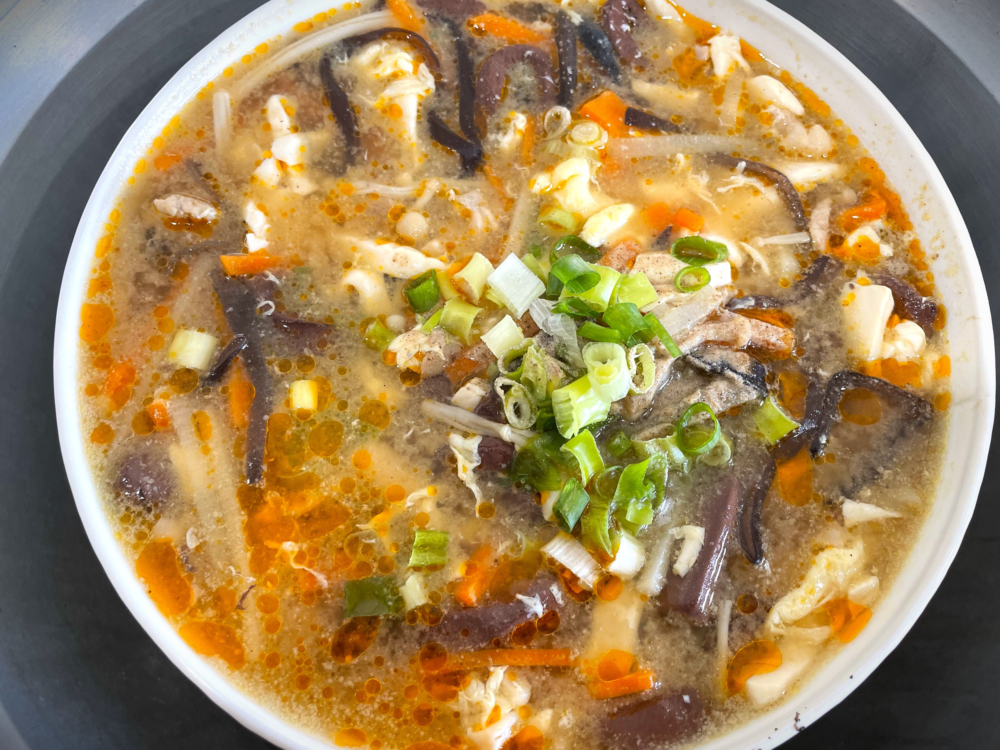

酸辣湯

材料：
- 紅蘿蔔 1/3條
- 盒裝板豆腐 1/2塊
- 黑木耳 8片
- 香菇 8朵
- 豬肉 200公克
- 蛋 1顆
- 太白粉 2大匙
- 醬油
- 烏醋
- 鹽
- 胡椒粉
- 麻油
醃料：
作法：
-
備料：紅蘿蔔切絲、豆腐切絲、黑木耳泡開洗淨切絲、香菇蒂切絲、香菇切薄片、豬肉切絲以醃料醃15分鐘。(買得到鴨血的朋友請將鴨血也切細絲)
- 陶鍋中加入橄欖油及麻油。
- 放入紅蘿蔔絲及香菇蒂絲，開中火拌炒，炒至紅蘿蔔軟化。
- 加入木耳絲拌炒。
- 加入香菇片拌炒，加鹽調味。
- 待香菇香氣已出，加熱水、胡椒粉、醬油，開大火，煮滾。
- 湯煮滾後以太白粉水勾芡。此時可濃稠些，因為之後加入醋會再稀釋湯汁。
- 勾芡後再放入豆腐，如此豆腐在湯中較不會破碎。
-
打入蛋花，之後再放入肉絲，待肉絲變色後加入白醋。煮滾後熄火，灑上麻油，胡椒粉。(有蔥花可加上蔥花，再將麻油及胡椒粉淋在蔥花上)
- 盛碗，趁熱享用！
影音教學：